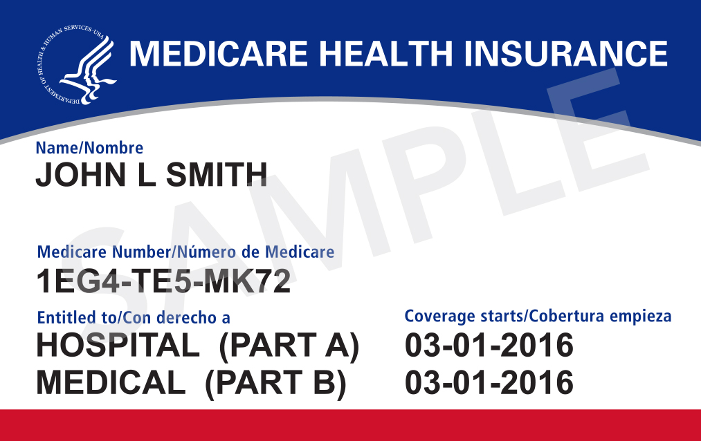

How US Medicare and Medicaid work: the two public health-coverage systems
Medicare is a FEDERAL insurance mainly for people 65+ and certain people with disabilities (based on age/disability); Medicaid is a joint FEDERAL-STATE program for low-income people (income-based, with rules that vary by state). This reference explains, facts only, how they differ, their parts, their costs (with 2026 figures) and — crucially — the rules for immigrants, including the 5-year bar and the public-charge rule that changed in September 2026.

The United States has two large publicly funded health programs: Medicare and Medicaid. Despite the similar names, they are meant for entirely different people. The following sets out, facts only, how each works, how they differ, and what rules apply to immigrants. Costs change every year — the 2026 figures are used here.
What Medicare is
Medicare is a FEDERAL health-insurance program, mainly for citizens and permanent residents aged 65 and over, plus certain younger people with disabilities. It is run by the Centers for Medicare & Medicaid Services (CMS). People under 65 become entitled after receiving Social Security disability benefits for 24 months; with ALS from the first month, and with ESRD (permanent kidney failure requiring dialysis or a transplant) under separate rules.
The four parts of Medicare
Part A (hospital insurance) covers inpatient hospital stays, skilled nursing facility care, hospice and some home health care. Part B (medical insurance) covers doctor visits, outpatient care, preventive services, lab tests, mental health and medical equipment. Part C (Medicare Advantage) is a private-plan alternative to A and B (usually including D); by law it must cover everything A and B cover. Part D is optional private prescription-drug coverage. A and B together are called Original Medicare.

How you enroll and the cost (2026)
The Initial Enrollment Period (IEP) is 7 months: the 3 months before the month you turn 65, that month, and the 3 months after. If you already receive Social Security benefits, you are enrolled in Parts A and B automatically. If you (or a spouse) paid Medicare taxes for at least 40 quarters (about 10 years), Part A is usually premium-free. In 2026: the standard Part B premium is $202.90/month, the annual deductible is $283, and the Part A hospital deductible is $1,736 per benefit period. Those with fewer than 40 quarters can buy Part A: $311/month for 30–39 quarters, $565/month for fewer than 30.
What Medicaid is
Medicaid is a program funded jointly by the FEDERAL government and the STATES for low-income people. Because states run it within federal rules, eligibility, covered services and even the program name vary from state to state. Eligibility is measured against the Federal Poverty Level (FPL); in states that adopted the Affordable Care Act expansion, adults are covered up to about 138% of the FPL. CHIP covers children in families that earn too much for regular Medicaid but can't afford private insurance. Medicaid is usually free or very low-cost to the enrollee.
Rules for immigrants
Most 'qualified' non-citizens — including permanent residents (green-card holders) — must generally wait 5 years from the date of qualifying status before full Medicaid/CHIP (the '5-year bar'). Refugees and asylees are exempt. States may choose to waive the bar for lawfully residing children and/or pregnant women — this depends on the state. Undocumented immigrants cannot get full Medicaid/CHIP; they may qualify only for Emergency Medicaid, which covers emergency conditions. For Medicare: a green-card holder with 40 quarters gets premium-free Part A at 65; without 40 quarters, they can buy Part A after 5 years of continuous residence.
The public-charge rule changed in September 2026
DHS announced a new rule that took effect on 18 September 2026. Before, ordinary Medicaid/CHIP did not count in a 'public charge' determination; from 18 September, USCIS MAY now consider means-tested benefits — including Medicaid and CHIP. Key point: receiving Medicaid does not automatically make someone a public charge — the decision is made on the 'totality of the circumstances' (age, health, income, assets and other factors). Refugees, asylees and several other categories are entirely exempt. Because this is a fast-changing, high-stakes area, it is advisable to consult an immigration attorney or an accredited nonprofit before dropping benefits.
The key difference between the two systems
Medicare = a FEDERAL program based on AGE (65+) or DISABILITY; you generally earn it through work and taxes, and income does not determine eligibility. Medicaid = a FEDERAL-STATE program based on LOW INCOME; rules and benefits vary by state and it is usually free. Some people qualify for both ('dual-eligible').
Why this matters for the diaspora
For Uzbeks in the US these programs often concern covering elderly parents or family members with disabilities: an elderly green-card-holder parent with 40 quarters qualifies for premium-free Part A, otherwise for paid Part A after 5 years; for Medicaid the 5-year bar and state exceptions apply. Figures and rules are updated every year — for the most accurate information check medicare.gov and medicaid.gov (or your state's Medicaid site).

Sources
- CMS — 2026 Medicare Parts A & B Premiums and Deductibles (Part B $202.90, deductible $283, Part A $1,736/$311/$565)
- Medicare.gov — Parts of Medicare / when to sign up (IEP, Parts A-D)
- SSA — Medicare (Publication No. 05-10043): 40 quarters, 24-month disability, enrollment
- Healthcare.gov — Coverage for lawfully present immigrants / Medicaid expansion (5-year bar, 138% FPL, CHIP)
- Medicaid.gov — Overview of Eligibility for Non-Citizens in Medicaid and CHIP (5-year bar, exceptions, emergency Medicaid)
- USCIS — Guidance on Public Charge Inadmissibility Determination (effective 18 Sep 2026)
- KFF — New public charge guidance and chilling effects among immigrant families